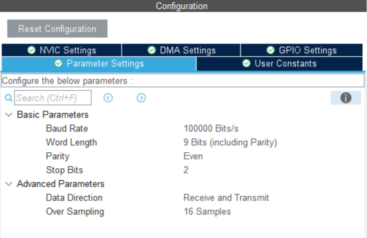
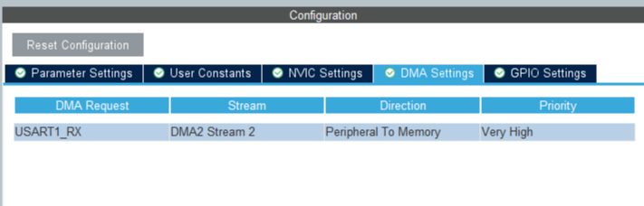
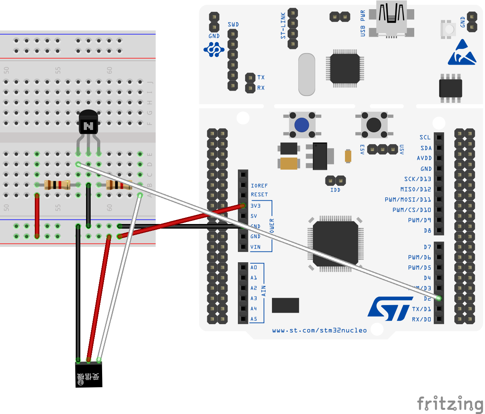

STM32資料 基礎編 6
操縦機（プロポ）からデータを受信してみよう
前回覚えた割り込み処理を使って、プロポのデータを実際に読んでみよう！
物資を投下するミッションや自動操縦などに必須になるので、頑張ってやってみてね
今回やること
今回は、回路があるので少し難しいけど頑張ってね
作業の流れ
- ピンを割り当てて、割り込みの設定をする
- wrapper.cppにコードを書き込む
- 受信機とSTMをつなぐ回路を組む
- STM32にプログラムを書き込み実行する
- プロポのスティックを動かして値を観察する
ピンの割り当て
受信したデータをPCに送信するためにUSART2を使うので、前回と同じようにPA2とPA3に割り当てをしておこう
SBUSの受信にはUSART1を使うのでUSART1のRXとTXも割り当てておこう
ピンの設定
SBUSは少し特殊な通信形式であるのでUSART1の詳細設定を変更する必要がある
DMAの設定と同じところにあるので、USART1のDMAと一緒に設定をしておこう
USART1の詳細設定
USART1のDMA
回路
ブレットボードの図を用意したので、これと同じ回路を組んでみよう
少し難しいので、先輩にチェックしてもらおう
回路図
トランジスタはN型、抵抗は1kΩを使ってね
プログラム
今回は、プロポから送られてくるデータをSTM32で受信して必要なデータを取り出す
プロポから送られてくるデータはSBUSと呼ばれる形式で、工夫することでシリアル通信と同じように受信ができる
データを分解するコードは少し難しいので、事前に用意したものを使ってね
サンプルコード
値が0になってしまったときは、黒いボタン（リセットボタン）を何回か押してみてね
#include "wrapper.hpp"
#include "usart.h"
#include "string"
uint8_t ReceiveBuffer[25];
uint16_t SBUSData[10] = {};
void SBUS_decode();
void init(){
//割り込みの開始
HAL_UART_Receive_DMA(&huart1, ReceiveBuffer, 25);
}
void loop(){
std::string str;
//受信したデータをPCに送信
for(int i = 0; i < 6; i++){
str = std::to_string(SBUSData[i]) + " ";
HAL_UART_Transmit(&huart2, (uint8_t *)str.c_str(),str.length(),100);
}
//改行を追加
str = "\n";
//データを送信
HAL_UART_Transmit(&huart2, (uint8_t *)str.c_str(),str.length(),100);
}
//データを受信したら呼び出される
void HAL_UART_RxCpltCallback(UART_HandleTypeDef *huart) {
//データがSBUSの形式であるか確認
if(ReceiveBuffer[0] == 0x0F && ReceiveBuffer[24] == 0x00){
SBUS_decode();//SUBSデータの分解
}
//受信の再開
HAL_UART_Receive_DMA(&huart1, ReceiveBuffer, 25);
}
//SBUSからデータを取り出すプログラム
void SBUS_decode(){
SBUSData[0] = (ReceiveBuffer[1] | ReceiveBuffer[2] << 8) & 0x07FF;
SBUSData[1] = (ReceiveBuffer[2] >> 3 | ReceiveBuffer[3] << 5) & 0x07FF;
SBUSData[2] = (ReceiveBuffer[3] >> 6 | ReceiveBuffer[4] << 2 | ReceiveBuffer[5] << 10) & 0x07FF;
SBUSData[3] = (ReceiveBuffer[5] >> 1 | ReceiveBuffer[6] << 7) & 0x07FF;
SBUSData[4] = (ReceiveBuffer[6] >> 4 | ReceiveBuffer[7] << 4) & 0x07FF;
SBUSData[5] = (ReceiveBuffer[7] >> 7 | ReceiveBuffer[8] << 1 | ReceiveBuffer[9] << 9) & 0x07FF;
SBUSData[6] = (ReceiveBuffer[9] >> 2 | ReceiveBuffer[10] << 6) & 0x07FF;
SBUSData[7] = (ReceiveBuffer[10] >> 5 | ReceiveBuffer[11] << 3) & 0x07FF;
SBUSData[8] = (ReceiveBuffer[12] | ReceiveBuffer[13] << 8) & 0x07FF;
SBUSData[9] = (ReceiveBuffer[13] >> 3 | ReceiveBuffer[14] << 5) & 0x07FF;
}終わりに
今回は、SBUSの受信を実際にやってみました!